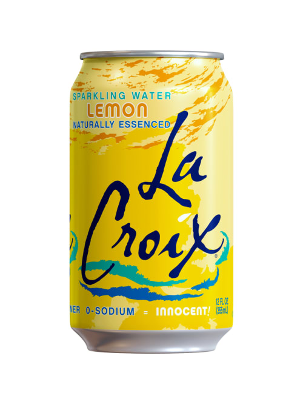
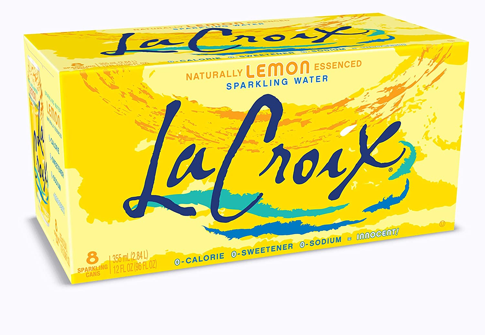

Assignment Links
Assignments Submitted before Module 3:
Assignments Submitted after Module 3:
Module 1 - General Basic HTML Review, Validation
This web page has been created in response to instructor direction provided on the
Module 1 Assignment Page on Canvas. This assignment is due by 11:59 pm on February 9th, 2021. The total amount of non-extra-credit points achievable is 10.
Per the assignment prompt, please note the following:
- Heading
This page also includes three distinct, aesthetically-compatible background colors and 1 one specialized font color. I chose this color scheme to mimic the packaging of my favorite flavor of La Croix. See images below.
- Background Color
This page also includes three distinct, aesthetically-compatible background colors and 1 one specialized font color. I chose this color scheme to mimic the packaging of my favorite flavor of La Croix. See images below.
- Small Images
Below are photos of my favorite La Croix Flavor - Lemon. Each image is 125 pixels tall, with a width that maintains the image's original aspect ratio.


- Two Short Paragraphs
Many countries contain the word "Guinea". This includes Guinea - Bissau, Papua New Guinea, etc. In standard American English, the Country referred to simply as "Guinea" is referred to as "Guinea Conakry" in other languages in order to be more specific.
Conakry itself is a vibrant metropolis with a population of 1,660,973 as of 2014. With a national population of 11,523,261 (as of 2014) in an area of 450 square kilometers, Conakry holds over 14% of the nation within less than 0.2% of its total land mass. Learn more on the Wikipedia Article for the Entire Republic as well as for the Specific City.
- Unordered List
This page includes several lists, including the module navigation menu to the left, as well as the seven-point list which forms this specific page. Below is an additional, unordered list of examples of mechanical fasteners. Each item is a clickable link.
- Address
See my CCSF email address below as a clickable link.
- Link
See several links throughout this page, all shown as underlined text.
Another clickable link to the CCSF website is here.